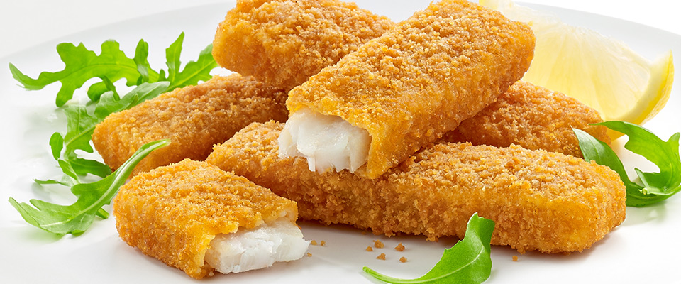

Jumbo fish fingers
GOLDEN CRISPY BREADCRUMBS

Makes
10 portions
Cooks In
25 minutes prep, plus cooking
Difficulty
Not too tricky
INGREDIENTS
1 x 2 kg side of salmon, skin off, pin-boned, from sustainable sources
2 large free-range eggs
2
tsp
sweet smoked paprika
250 g wholemeal bread
30 g Cheddar cheese
extra virgin olive oil
METHODS
Cut the fish into 10 x 120g portions.
I tend to cut the side lengthways about 3cm thick, then into chunks from that.
In a shallow bowl:
whisk the eggs with the paprika and a pinch of sea salt and black pepper
Tear the bread into a food processor, grate in the cheese, add 2
tbsp
of oil and whiz until you have breadcrumbs, then tip into a tray.
Coat each fish portion in the egg mixture, let any excess drip off, then turn in the breadcrumbs until well coated all over.
Transfer to a tray lined with greaseproof paper, layering them up between sheets of paper until they're all coated.
Cook right away or freeze in the tray - once frozen, you can pop them into a tub or sandwich bags for easier storage.
To cook:
Place however many jumbo fish fingers you need on a roasting tray.
Cook in a preheated oven at 200°C/400°F/gas 6 for 15 minutes from fresh, or 20 minutesfrom frozen, or until golden and cooked through.
User Comments
Enter a comment
Name:
Comment:
All comments:
This is a very fun recipe to follow.
- Ahmed Z.
This is my favorite recipe. I enjoy it.
- Karim K.
Sigh-up tp receive new recipes:
Personal Information
Name:
Email:
Type of recipes
Breakfast
Lunch
Dinner
Links
Search for other fish fingers recipes